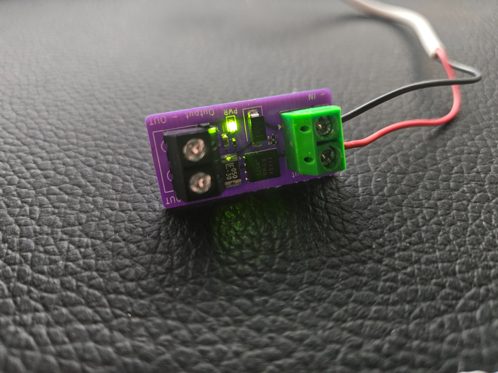

Inline power protection board for 3V–24V systems. Designed to prevent reversed polarity damage and suppress voltage spikes.
Passive inline breakout with selectable pull-ups (2.2K / 4.7K / 10K), buffered activity LEDs, and exposed test points on every net. Qwiic compatible.
Currently in development.
Programmable embedded sensor emulator for development and validation.
Currently in development.